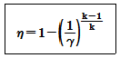

항공기관정비기능사 (2009-07-12 기출문제)
1과목: 비행원리
1. 다음 중 압력을 표시하는 단위가 아닌 것은?
- N/m2
- mmHg
- lb-in
- hPa
(정답률: 71%)

2. 초음속 공기의 흐름에서 통로가 좁아질 때 일어나는 현상을 옳게 설명한 것은?
- 속도는 증가하고 압력은 감소한다.
- 압력과 속도가 동시에 증가한다.
- 속도는 감소하고 압력은 증가한다.
- 압력과 속도가 동시에 감소한다.
(정답률: 78%)
3. 날개의 공기역학적 중심이 비행기의 무게중심 앞 0.⑤에 있고, 공기역학적 중심주위의 키놀이 모멘트계수는 -0.016이다. 양력계수가 0.46인 경우 무게중심 주위의 모멘트 계수는 얼마인가? (단, 공기역학적 중심과 무게중심은 같은 수평선상에 놓여 있다.)
- 0.45
- 0.⑤
- 0.0065
- 0.007
(정답률: 23%)
4. 유도항력의 크기에 관한 설명으로 틀린 것은?
- 양력의 크기에 비례한다.
- 날개의 가로세로비에 비례한다.
- 날개의 길이에 반비례한다.
- 양력계수의 제곱에 비례한다.
(정답률: 49%)
5. 뒷전 플랩 중 하나로 날개의 일부가 쪼개진 모양으로 내림으로써 날개 윗면의 흐름을 강제적으로 빨아들여 흐름의 떨어짐을 지연시키는 플랩은?
- 슬롯과 슬랫
- 스플릿 플랩
- 크루거 플랩
- 드루프 플랩
(정답률: 41%)
6. 헬리콥터의 기관이 정지하여 자동회전을 할 때 회전날개의 회전수는 어떻게 변화되는가?
- 지속적으로 감소한다.
- 지속적으로 증가한다.
- 일정 높이까지는 감소되면서 하강하고 그 후 일정속도를 유지한다.
- 일정 높이까지는 감소되면서 하강하고 그 후 일정하게 증가한다.
(정답률: 73%)
7. 헬리콥터에서 주기적 피치 제어간(Cyclic pitch control lever)으로 조종할 수 없는 비행은?
- 전진비행
- 상승비행
- 측면비행
- 후퇴비행
(정답률: 65%)
8. 이상유체가 벤츄리관(Ventury tube)을 정상흐름 상태로 통과할 때, 이 흐름의 전압(Total pressure)에 대한 설명으로 옳은 것은?
- 위치에 관계없이 모두 같다.
- 해당 위치의 동압의 제곱에 비례한다.
- 해당 위치의 정압(Static pressure)에 비례한다.
- 해당 위치의 동압(Dynamic pressure)에 비례한다.
(정답률: 42%)
9. 날개 끝 실속을 방지하기 위해 날개 끝의 붙임각을 날개 뿌리의 받음각보다 작거나 크게 한 것을 무엇이라 하는가?
- 쳐든각
- 기하학적 비틀림
- 뒤젖힘각
- 기계적 비틀림
(정답률: 69%)
10. 무게가 600㎏인 비행기가 이륙하여 1분 후에 고도 600m로 비행하고 있다면 이 비행기의 상승률은 몇 m/s인가?
- 1
- 10
- 60
- 600
(정답률: 55%)
11. 비행기가 착륙 시 활주로 위의 일정한 높이에서 실속속도 이상의 속도로 강하하는데 그 이유로 옳은 것은?
- 주날개에서 발생하는 임계항력을 증가시키기 위해
- 꼬리날개에서 발생하는 유도항력을 일정하게 유지하기 위해
- 더욱 빠른 실속을 유도하여 착륙시간을 단축시키기 위해
- 지면 부근의 돌풍에 의한 비행기의 자세 교란을 방지하기 위해
(정답률: 64%)
12. 조종면의 뒷전 부분에 부착시키는 작은 플랩의 일종으로 큰 받음각에서 캠버를 증가시켜 수평 꼬리날개의 효율을 증가시키는 역할을 하는 장치는?
- 탭
- 혼 밸런스
- 도살핀
- 앞전 밸런스트
(정답률: 65%)
13. 비행기가 항력을 이겨서 계속 비행하는데 필요한 마력을 무엇이라 하는가?
- 이용마력
- 제동마력
- 여유마력
- 필요마력
(정답률: 80%)
14. 프로펠러 비행기의 비행속도가 120m/s이고 프로펠러의 회전수가 1200rpm, 프로펠러 지름이 3m일 때 이 프로펠러의 진행률은 약 얼마인가?
- 0.75
- 1.00
- 1.75
- 2.00
(정답률: 23%)
15. 다음 중 항공기의 평형상태에 대한 설명으로 가장 옳은 것은?
- 모든 힘의 합이 0인 상태
- 모든 모멘트의 합이 0인 상태
- 모든 힘의 합이 0이고, 모멘트의 합은 1인 상태
- 모든 힘의 합은 0이고, 모멘트의 합도 0인 상태
(정답률: 49%)
16. 항공기 정비 용어 중 MEL의 의미로 옳은 것은?
- 최소점검기관목록(Minimum Engine List)
- 최소구비장비목록(Minimum Equipment List)
- 기관고장항목(Missing Engine List)
- 장비고장항목(Missing Equipment List)
(정답률: 72%)
17. 물림 턱에 잠금 장치가 있어 작은 바이스처럼 부품을 잡아주며 부러진 스터드나 꼭 낀 코터핀을 장탈하는데 가장 적합하게 사용되는 공구는?
- 바이스 그립 플라이어(Vise grip pliers)
- 스냅 링 플라이어(Snap ring pliers)
- 슬립 조인트 플라이어(Slip joint pliers)
- 커넥터 플라이어(Connector pliers)
(정답률: 76%)
18. 마이크로 스톱 카운터 싱크(Micro stop counter sink)의 용도로 옳은 것은?
- 리벳의 구멍을 늘리는데 사용
- 리벳이나 스크류를 절단하는데 사용
- 리벳의 구멍 언저리를 원추 모양으로 절삭하는데 사용
- 리벳팅하고 밖으로 튀어나온 부분을 연마하는데 사용
(정답률: 58%)
19. 다음 중 비교 측정기에 해당하는 것은?
- 마이크로미터
- 직각자
- 다이얼게이지
- 버니어캘리퍼스
(정답률: 62%)
20. 케이블을 연결해 주는 부품으로 조종 케이블의 장력을 조절해 주는 역할도 하며 가운데에 배럴이 있는 것은?
- 턴버클
- 스웨이징
- 코터 핀
- 니코프레스
(정답률: 83%)
2과목: 항공기정비
21. 눈 보호장구인 차광안경의 색깔 중 가스용접이나 전기용접 시 자외선 차광용으로 어떤 색깔을 사용하는가?
- 적색
- 황색
- 황록색
- 녹색
(정답률: 59%)
22. 예방 정비의 모순점에 대한 내용이 아닌 것은?
- 부품에 이상이 있을 경우 즉각적인 원인 파악과 조치가 가능하다.
- 장기간 만족스럽게 작동되는 장비나 부품을 고의로 장탈하고 있다.
- 부품의 분해 조립 과정에서 고장 발생의 가능성이 조성된다.
- 부품 본래의 결점을 파악하기 어려워 품질 개선에 어려움이 있다.
(정답률: 54%)
23. 지상 점검 시 작업자가 지켜야 할 사항으로 틀린 것은?
- 작업 시에는 규정보다 작업자의 능력에 따라 작업을 수행해야 한다.
- 작업장의 상태를 청결히 하고 정리정돈하여 사고의 잠재 요인을 제거하도록 노력한다.
- 작업 시 보호장구가 필요할 때에는 반드시 보호장구를 착용해야 한다.
- 보다 안전하고 능률적인 작업 수행을 위하여 모든 작업자들은 서로 협조하고 조언해야 한다.
(정답률: 88%)
24. 항공기의 결함 상태를 다른 특수 장치나 장비를 사용하지 않고 직접 눈으로 그 상태를 확인하는 검사 방법을 무엇이라 하는가?
- 무장비 검사
- 육안 검사
- 비파괴검사
- 촉진 검사
(정답률: 80%)
25. 작업자가 리벳 작업하는 반대쪽에 접근할 수 없는 경우와 같이 일반 리벳을 사용하기에 부적절한 곳에 사용하는 리벳은?
- 유니버설 리벳
- 접시 머리 리벳
- 블라인드 리벳
- 둥근머리 리벳
(정답률: 65%)
26. 아르곤이나 헬륨가스 안에서 전극와이어를 일정한 속도로 토치에 공급하여 와이어와 모재 사이에 아크를 발생시켜 나심선을 스프레이 상태로 용융하여 용접을 하는 방법은?
- 아크용접
- 서브머지드 아크용접
- 가스용접
- 불활성가스 금속아크용접
(정답률: 48%)
27. 항공기 계통의 고온, 고압의 작동 요구 조건에 맞도록 제작된 호스의 재질로서 진동과 피로에 강하며 강도가 높고, 고무호스보다 부피의 변형이 적은 특징을 가진 것은?
- 부틸(Butyl)
- 부나-N(Buna-N)
- 테프론(Teflon)
- 네오프렌(Neoprene)
(정답률: 57%)
28. 항공기 정비 중에서 일반적인 보수에 속하지 않는 것은?
- 항공기 지상 취급
- 항공기 점검
- 항공기 조절 및 검사
- 항공기의 부품 교환
(정답률: 52%)
29. What's the principle of the jet propulsion?
- Newton's first law
- Newton's second law
- Newton's third law
- Newton's forth law
(정답률: 51%)
30. 브로모클로로메탄 소화기에 대한 설명으로 틀린 것은?
- 무색이고 달콤한 냄새를 가진다.
- 소화력은 이산화탄소 소화기의 약 3배 이상으로 B급 및 C급 화재에 주로 사용된다.
- 방출시 하얗고 미세한 분말이 영하37도의 온도에서 높은 방출률로 방출되어 동상에 주의해야한다.
- 소화기 사용 시 주위에는 산소결핍이 생기기 때문에 질식되기 쉬우므로 주의해야 한다.
(정답률: 37%)
31. What's not the primary group of the control surface?
- The aileron
- The elevators
- The rudder
- The tab
(정답률: 70%)
32. 자화된 검사물에 자분을 뿌려 자분이 집적되는 현상을 분석하여 결함여부를 판별하는 비파괴검사 방법은?
- 맴돌이전류검사
- 초음파검사
- 액체침투탐상검사
- 자분 탐상 검사
(정답률: 84%)
33. 운항과 관련하여 빈도가 높은 정비단계로서 항공기 내외의 주행검사, 결함 수정 등을 행하는 점검은?
- A점검
- B점검
- C점검
- D점검
(정답률: 52%)
34. 항공기 운항이나 정비의 목적으로 항공기를 지상에서 다루는 제반 작업을 항공기 지상취급이라고 하는데 이에 해당하지 않는 것은?
- 항공기 지상유도
- 항공기 견인
- 항공기 계류
- 항공기 수리
(정답률: 60%)
35. 금속표면을 도장 작업하기 전에 적절한 전처리작업을 하여 금속표면과 도료의 마감칠(Top coats)사이에 접착성을 높이기 위한 도료는?
- 아크릴래커
- 프라이머
- 합성에나멜
- 폴리우레탄
(정답률: 66%)
36. 다음중 원심형 압축기의 장점이 아닌 것은?
- 단당 압력상승이 높다.
- 회전 속도 범위가 넓다.
- 무게가 가벼우며 시동 출력이 낮다.
- 단당 압력상승이 높은 만큼 2단 이상의 압축에서 더욱 실용적이다.
(정답률: 38%)
37. 왕복기관에서 실린더안의 연소가 가장 잘 이루어지는 연소실의 모양은?
- 원뿔형
- 도움형
- 삼각
- 반구형
(정답률: 81%)
38. 터빈 깃의 뒷전에 과열로 인하여 생기는 흔적은?
- 칼자국 모양
- 움푹 패인 모양
- 물결무늬 모양
- 사각형으로 찍힌 모양
(정답률: 75%)
39. 가스터빈기관항공기에 사용되는 연료가 갖추어야할 조건으로 옳은 것은?
- 어는점이 높아야 한다.
- 인화점이 낮아야 한다.
- 증기압이 낮아야 한다.
- 무게당 발열량이 작아야 한다.
(정답률: 57%)
40. 왕복가관 윤활계통에서 크랭크케이스 밑부분을 윤활유 탱크로 이용하는 방식을 무엇이라 하는가?
- 단일윤활계통
- 습식윤활계통
- 오일윤활계통
- 건식윤활계통
(정답률: 40%)
3과목: 항공기관
41. 가스터빈 기관의 효율을 향상시키는 방법이 아닌 것은?
- 기관의 압축비를 높인다.
- 흡입 공기의 중량 유량을 증가시킨다.
- 압축기 및 터빈의 단열효율을 증가시킨다.
- 배기가스속도와 비행속도의 차를 크게 한다.
(정답률: 70%)
42. 오일여과기에 있는 바이패스밸브(By-pass valve)의 주된 기능은?
- 오일을 보기부분으로 보낸다.
- 오일 냉각기 둘레로 오일을 직접 보내준다.
- 릴리프 밸브(Relief valve)의 역할을 한다.
- 여과기가 막힐 경우 오일이 정상적으로 흐르도록 만든다.
(정답률: 70%)
43. 피스톤의 지름이 135㎜, 행정거리가 150㎜, 실린더수가 6개인 4행정 기관의 제동평균 유효압력이 7.5kgf/cm2, 회전수가 2600rpm일 때 제동마력은 약 몇 PS인가?
- 579
- 479
- 379
- 279
(정답률: 32%)
44. 다음 중 열기관의 이론열효율을 구하는 공식으로 옳은 것은?
- 유효한일 ÷ 공급된 열량
- 유효한 압력 ÷ 공급된 압력
- 유효한 체적 ÷ 공급된 일
- 공급압력 ÷ 유효압력
(정답률: 55%)
45. 다음 중 애뉼러형(Annular type) 연소기의 특징이 아닌 것은?
- 전체 축 방향 길이가 짧다.
- 구조가 간단하며 가벼운 편이다.
- 연소실은 화염 전파관(flame propagation tube)을 갖고 있다.
- 터빈으로 유입되는 연소가스의 분포가 고르다.
(정답률: 51%)
46. 배기밸브의 밸브간격을 냉간 간격으로 조절해야 하는데 열간 간격으로 조절하였을 경우 배기 밸브의 개폐시기에 대한 설명으로 옳은 것은?
- 늦게 열리고, 일찍 닫힌다.
- 늦게 열리고, 늦게 닫힌다.
- 일찍 열리고, 늦게 닫힌다.
- 일찍 열리고, 일찍 닫힌다.
(정답률: 50%)
47. 기압, 밀도 온도가 변하는 것을 보상하기 위해 비행 중에 기관에 들어가는 혼합기 농도를 적절하게 조절하는 장치는?
- 저속장치
- 주 미터링 장치
- 이코노마이저 장치
- 혼합기 조절장치
(정답률: 70%)
48. 4행정 사이클 기관에서 크랭크축 회전수가 4000rpm일 때 1분 동안 출력행정은 몇 회를 하였는가?
- 4000
- 2000
- 1000
- 500
(정답률: 57%)
49. 왕복기관이 저속 운전 시 비정상적으로 작동한다면 그 원인으로 틀린 것은?
- 연료압력이 낮기 때문에
- 기화기의 저속혼합비 조절이 불량하기 때문
- 기화기 내부에 있는 가속 펌프가 불량하기 때문
- 점화플러그에 이물질이 묻어있고, 간극상태가 불량하기 때문
(정답률: 38%)
50. 마그네토 배전기 블록에 표시된 숫자가 나타내는 의미는?
- 기관의 점화순서
- 마그네토를 떼어내는 순서
- 마그네토 점화순서
- 점화플러그 점검순서
(정답률: 74%)
51. 다음 중 유도형 점화계통에서 변압기의 역할로 옳은 것은?
- 고전압 유도
- 점화기의 방전 방지
- 고저항 유도
- 점화기의 승압 방지
(정답률: 44%)
52. 수퍼차저의(Super charger) 목적에 대한 설명으로 옳은 것은?
- 흡입연료의 온도를 증가시켜 출력을 증가시킨다.
- 흡입연료의 발열량을 증가시켜 출력을 증가시킨다.
- 흡입공기나 혼합공기의 온도를 증가시켜 출력을 증가시킨다.
- 흡입공기나 혼합가스의 압력을 증가시켜 출력을 증가시킨다.
(정답률: 56%)
53. 정속피치 프로펠러의 깃 각 변화는 승압된 오일압력과 프로펠러의 원심력사이의 균형에 따라 달라지는데, 그 차이를 조종하는 장치는?
- 조속기
- 플라이 웨이트
- 오일펌프
- 마운팅플랜지
(정답률: 49%)
54. 기관의 출력 중 시간제한 없이 작동할 수 있는 최대 출력으로 이륙추력의 90% 정도에 해당하는 출력의 명칭은?
- 아이들 출력
- 최대 연속 출력
- 순항 출력
- 최대 상승 출력
(정답률: 47%)
55. 후기연소기에 대한 설명으로 틀린 것은?
- 효과적인 연소를 위해 입구의 공기속도가 작은 것이 좋다.
- 터빈 출구와 후기 연소기 입구 사이는 디퓨져 구조로 설치한다.
- 후기연소기 미작동 시에는 배기노즐 출구의 면적을 크게 한다.
- 터빈 뒤에 테일콘을 장착하여 확산통로가 되도록 한다.
(정답률: 45%)
56. 일의 기본단위인 1J과 같은 양을 나타낸 것은?
- 1㎏·m
- 1㎏/m2
- 1N·m
- 1N/m2
(정답률: 59%)
57. 다음 중 가스터빈 기관의 종류에 대한 설명으로 옳은 것은?
- 터보프롭 기관은 헬리콥터에 사용되며 바이패스(by pass)되어 분사되는 배기가스의 양이 많아서 배기소음이 증가한다.
- 터보제트 기관은 고고도, 저속상태에서 효율이 가장 좋고 연료 소비율도 감소한다.
- 터보축 기관은 가스터빈 기관에 프로펠러를 적용한 것으로서 감속기어 장치가 흡입구에 위치한다는 특징이 있다.
- 터보팬 기관은 많은 깃을 갖는 덕트로 싸여있는 일종의 프로펠러 기관으로 볼 수 있다.
(정답률: 43%)
58. 기화기에서 만들어진 혼합가스를 각 실린더로 분배하고 , MAP계기의 수감부가 있는 곳은?
- 과급기
- 흡기밸브
- 기화기
- 매니폴드
(정답률: 69%)
59. 최근 터보팬 기관의 역추력장치는 팬 역추력 장치를 주로 사용하는 이유가 아닌 것은?
- 무게감소
- 연료소모감소
- 고장감소
- 역추력 효과의 증가
(정답률: 48%)
60. 다음과 같은 브레이턴사이클의 열효율을 구하는 공식에서 γ가 의미하는 것은?

- 압축기 입구와 출구의 압력비
- 압축기 입구와 출구의 온도비
- 터빈 입구와 출구의 압력비
- 터빈 입구와 출구의 온도비
(정답률: 48%)